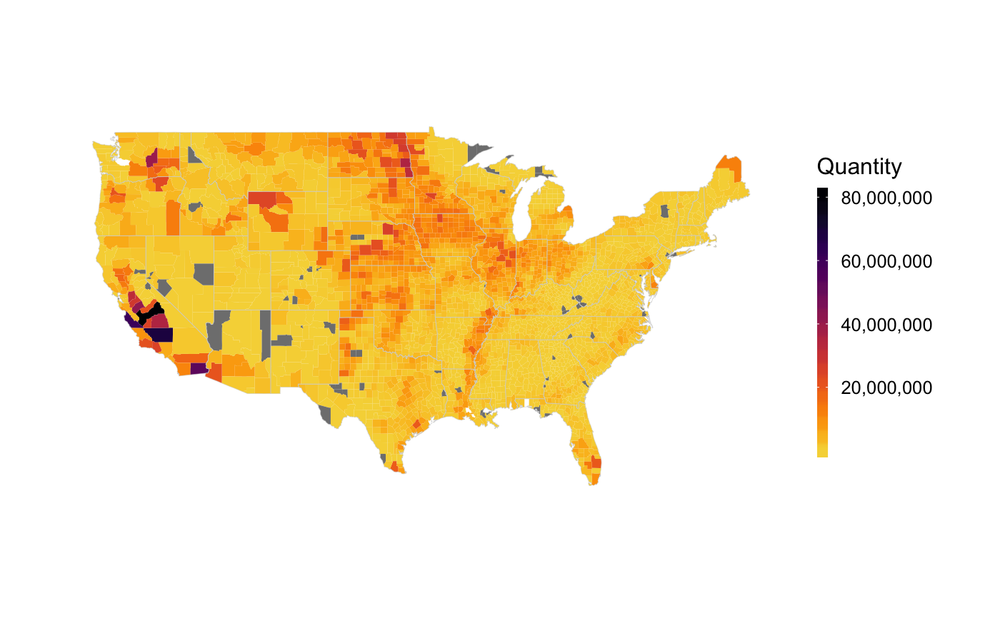

visualize the fertilizer data in the whole contiouse U.S.
map_us_fertilizer(data = "us_fertilizer_county", Year, Nutrient, Farm_Type = NULL, Input_Type = NULL, State = NULL, County = NULL, FIPSs = NULL, fun = NULL, annual_change = FALSE, level = "county", facet = NULL, trans = "identity", fill_var_type = NULL, viridis_palette = "viridis", viridis_direction = -1, viridis_end = 0.9, projection = NULL, parameters = NULL, orientation = NULL, xlim = NULL, ylim = NULL, north = FALSE, na.rm = TRUE, coord_fix_ratio = 1.3, map_theme = theme_map_fertilizer())
| data | the dataset to plot. default: us_fertilizer_county. |
|---|---|
| Year | the temporal coverage of the data to visualize. See link for available period. |
| Nutrient | the nutrient type of fertilizer from usfertilizer. Has to be N, P or both (NULL). |
| Farm_Type | the spatial source of fertilizer, should be farm, nonfarm or both. |
| Input_Type | the input source of fertilizer, should be manure, fertilizer. |
| State | the states that will show in the plot,default: all states. |
| County | the counties that will show in the plot, default: all counties. |
| FIPSs | the FIPS code for counties in USA. |
| fun | the function to process data, not done yet. |
| annual_change | to check if the data represent the annual change, default: FALSE. |
| level | the spatial resolution of map, should be county or state, default county. |
| facet | the facet to draw subplots. |
| trans | the transformation parameter for scale_fill_viridis. |
| fill_var_type | the type of data to visualize, default: Null. |
| viridis_palette | the palette type for viridis, options: “Viridis”,“magma”, “plasma”, "cividis", and “inferno.” |
| viridis_direction | Sets the order of colors in the scale. If 1, the default, colors are ordered from darkest to lightest. If -1, the order of colors is reversed. |
| viridis_end | The (corrected) hue in [0,1] at which the viridis colormap ends. |
| projection | the projection name for spatial projection. |
| parameters | parameters for map projection. |
| orientation | orientation for map projection. |
| xlim | x axis limits for map project. |
| ylim | y axis limits for map project. |
| north | logic. If TRUE, the ggplot object will include a states_shape df to draw north symbols and scale bars. |
| na.rm | How to deal with NA values. Default: TRUE. |
| coord_fix_ratio | the ratio for fixed coordinate system, default: 1.3. |
| map_theme | the map theme for dataset. Default: theme_map_fertilizer() |
a ggplot object.
link(data_preparation)
require(usfertilizer) require(getFertilizer) data("us_fertilizer_county") us_plot <- map_us_fertilizer( data = us_fertilizer_county, Year = 2010, Nutrient = "N", level = "county", Farm_Type = "farm", Input_Type = "Fertilizer", map_theme = theme_map_fertilizer(base_size = 12), viridis_palette = "inferno") us_plot